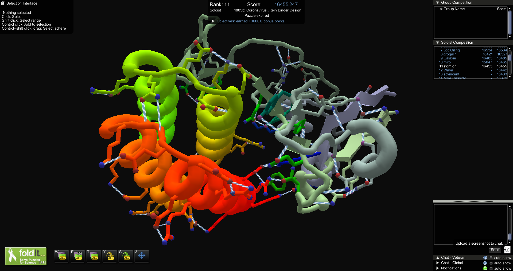

Pándēmos (From Ancient Greek)
Common to all the people.
Pándēmos
An experimental narrative about the relationship between the new state of the world (pandemic) and the need for a change in today's information paradigm (infodemic).
↓
OPENING
the unity of all bodies
March 20, 2020
" Humankind is now facing a global crisis. Perhaps the biggest crisis of our generation. The decisions people and governments take in the next few weeks will probably shape the world for years to come. They will shape not just our healthcare systems but also our economy, politics and culture. We must act quickly and decisively. We should also take into account the long-term consequences of our actions. When choosing between alternatives, we should ask ourselves not only how to overcome the immediate threat, but also what kind of world we will inhabit once the storm passes. Yes, the storm will pass, humankind will survive, most of us will still be alive — but we will inhabit a different world. "
↳ Yuval Noah Harari

PART 1
the shared vulnerability
A pandemic is an epidemic of disease that has spread across a large region, for
instance multiple continents, or worldwide.
infodemic (Noun)
An excessive amount of information concerning a
problem such that the solution is made more difficult.
February 15, 2020
" We’re not just fighting an epidemic; we’re fighting an infodemic. Fake news spreads faster and more easily than this virus, and is just as dangerous. "
↳ Tedros Adhanom Ghebreyesus
Director-General, World Health Organization
Director-General, World Health Organization
" Tell me what you pay attention to and I will tell you who you are. "
↳ Jose Ortega y Gasset
PART 2
the overload of the system
infodemic (Noun)
An excessive amount of information concerning a
problem such that the solution is made more difficult.
Information overload is the difficulty in understanding an issue and
effectively
making decisions when one has too much information about that issue.
June 7, 2016
" Every time we go online we’re bombarded with evidence of technology enabling us to make stuff. 500 hours of video uploaded to YouTube every minute. A hundred thousand posts on Tumblr, 60,000 Instagram photos, 12 hours of music on Soundcloud, 450,000 tweets, all in the space of 60 seconds. We’re constantly urged to share our ideas, our creations, assured that they’re worthy of attention and that other people will like them. It seems like a technology-fuelled creative renaissance. "
↳ Rhodri Marsden
" Getting information off the Internet is like taking a drink from a fire hydrant. "
↳ Mitch Kapor
ANNEX PART 2
the cyclical overload of the system
" The abundance of books is a distraction. "
↳ Seneca (c. 4 BC – AD 65)
" As long as the centuries continue to unfold, the number of books will grow continually, and one can predict that a time will come when it will be almost as difficult to learn anything from books as from the direct study of the whole universe. It will be almost as convenient to search for some bit of truth concealed in nature as it will be to find it hidden away in an immense multitude of bound volumes. "
↳ Denis Diderot (1755)
PART 3
frustration, acceptance, action
" Information overload is a symptom of our desire to not focus on what's important. It is a choice. "
↳ Brian Solis
November 13, 2017
" I think in the back deep, deep recesses of our minds we kind of knew something bad could happen. But I think the way we defined it was not like this. It literally is a point now where I think we have created tools that are ripping apart the social fabric of how society works. That is truly where we are. And I would encourage all of you as the future leaders of the world to really internalize how important this is. "
↳ Chamath Palihapitiya
Ex-Facebook executive
Ex-Facebook executive
March 17, 2020
" Those who talk about the return to normality, those who think they can reactivate the machine as if nothing happened, did not understand what is going on. "
March 23, 2020
" When this story will end, (and in a sense, it never ends, because the virus will be able to recede without disappearing, and although we might invent vaccines, the virus can always adapt) we will have to face a period of extraordinary depression. If we simply pretend to return to “normal” we might have to face violence, totalitarianism, massacres, and the extinction of the human race before the end of the century. Normality must not return. "
↳ Franco "Bifo" Berardi
PART 4
the emergency of redesigning our collective behavior
April, 1992
" Save the planet?! We don’t even know how to take care of ourselves yet! We haven’t learned how to care for one another and we’re gonna save the fucking planet?!
There is nothing wrong with the planet… nothing wrong with the planet. The planet is fine… the people are fucked!
What would you do if you were the planet trying to defend against this pesky, troublesome species? Let’s see… what might… hmm… viruses! Viruses might be good. They seem vulnerable to viruses. "
↳ George Carlin

" The internet is a reflection of our society and that mirror is going to be reflecting what we see. If we do not like what we see in that mirror the problem is not to fix the mirror, we have to fix society. "
↳ Vint Cerf
PART 5
understanding contributes to behavioral change
" One of the most important things I hope we can learn from our experience on the Internet is we need to take knowing our world, understanding our world, to a meta level where we are thinking not just about what we're reading but where it’s coming from, what the incentives were, how it fits, what the other possibilities are, what is the likelihood of probability that something is true, something that we're being told is true… we need to be one level up. We need to be trained to learn to be one level up in our cognition and I do think that's an evolutionary step that I see us making. "
↳ David Weinberger

" Any serious effort to make the world better would require some kind of organized effort that harnessed the collective human intellect of all people to contribute to effective solutions. "
↳ Douglas Engelbart
CLOSING
we need alternative perspectives
if we want deeper and plural
understanding
March 19, 2020
" When technology fails, we look for someone to blame. If our systems cannot cope with these mistakes, then it is hopeless to demand better people: we need better systems, better practices, deeper understanding. Only then we'll be able to respond to our fullest potential and avert the darkest timeline. "
↳ Cade Diehm
March 13, 2020
" The virus is a condition for a mental jump that no politica preaching could ever produce. Equality is back, at the centre of the scene.
Let’s imagine it as the starting point for times to come. "
↳ Franco "Bifo" Berardi